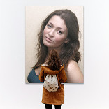

PhotoFunia 藏得最深的五个冷门功能，90% 的人只用了它 10% 的能力
PhotoFunia 有 642 个特效，大多数人只用来换脸加相框。其实它藏着高分辨率文字特效、非贴图类场景、分类重叠逻辑等很少有人发现的巧思，翻到底朝天给你挖出来。
你以为 PhotoFunia 就是个「把照片塞进各种模板」的换脸工具？我之前也是这么想的，直到去官网逛了一圈花了一下午把 13 个分类翻了个底朝天，才发现它藏着一堆官方从没放在首页推荐过的功能。这些东西不是什么高深技巧，就是入口太偏，或者根本不是你对这类 App 的预期。
如果你还没装，先从下载拿一个最新版，翻一遍就知道我在说什么了。
下面这五个，我觉得是最值得挖的。
Neon Writing：不需要上传照片的赛博风文字图
这是我最惊讶的发现——PhotoFunia 居然有一类特效完全不需要照片，只输文字就能出图。Neon Writing 就是其中最漂亮的一个：在地下俱乐部的暗场景里，用发光的霓虹灯效果把你输入的文字烧在屏幕上方，连光晕都给你算好了。
入口藏在 Misc 或 Filters 分类里（这俩分类本身就很少有人翻），直接搜 "neon writing" 倒是能命中。操作简单到离谱：两行文字，每行约 15 个字符，点生成，2 到 5 秒出图。
真正让我惊喜的是它支持高分辨率输出——效果页上有明确的 HD 标签，生成的成品分辨率够当桌面壁纸甚至打印。这种细节 PhotoFunia 官方从来没在首页提过，像是偷偷给知道的人留的后门。
官方分类根本不是互斥的，这是检索时最重要的认知
PhotoFunia 把 642 个特效分成 13 大类——Faces 90 个、Lab 112 个、Billboards 62 个，看起来整整齐齐。但你有没有发现，有些效果你在 Faces 分类看到，换个入口又在 Misc 里冒出来？
这不是 Bug，是 PhotoFunia 官方故意不做互斥分类。比如换脸类效果，既在 Faces 里有，Lab 分类（它管 AI 生成和创意混合）也会放几份进去。去PhotoFunia文档翻一下就能看到官方明说的：有些特效具有多重属性，所以归到了多个分类。
这件事的意义比你想象的大——你在某个分类里没找到想要的效果，不代表它不存在。换个分类或者直接搜关键词，命中率会高很多。我之前在 Galleries 里找"挂画"效果翻了半天，结果用搜索栏输 "gallery" 一下就冒出来七八个。
Galleries 和 Frames 不是一回事，选前者还是后者？
这俩分类名字像兄弟，功能经常被混着用，但 PhotoFunia 设计时是有明确分工的：
Frames 的主角是相框——照片被放进相框里，场景是辅助的（画家工作室、墙面、牛仔布）。Galleries 的主角是画廊——照片是展品，挂在有射灯、有参观者、有氛围的博物馆场景里。
举个例子：你想做一张"我的照片挂在白墙上"的简约图，Frames 的墙面效果就行，干净利落。但如果你想要"我的画在美术馆展出了"那种故事感，就得去 Galleries 分类——At The Gallery 效果会给你搭好白墙、射灯、画框，甚至角落里还有个参观者剪影。
还有个实用区别：Frames 里的 Painter 类效果（街头画家给你画肖像）需要人脸检测，而 Galleries 大部分效果完全不需要人脸——任意图片塞进去就行，哪怕是风景照也能当"展品"。

Magazines 和 Books：任意图片都能上杂志封面
你以为杂志封面效果需要正脸照才能对齐？不是的。Magazines（18 个效果）和 Books（16 个效果）这两个分类，大部分效果不需要人脸检测——就是贴图加调色，什么图片都能塞进去。
早报头条 Morning Paper 效果尤其好用：把你的照片塞进头版文章旁边，还能自己编一行"新闻标题"。我见过有人用这个做梗图——把宠物照片放进去，标题写"某小区发现巨型橘猫"，效果比正经新闻还像。
书籍封面也同理。如果你想给自己的小说或故事集做个像样的封面，Books 分类里的精装小说风格、故事书插画风格、教科书封面风格都是现成的模板，连书名和作者名的位置都预留给你填。
有个小坑要注意：这些模板里的文字位置是 PhotoFunia 固定好的。如果你上传的图片本身带文字（比如水印、标题），很可能和模板预设的文字重叠。建议传纯图片，让 PhotoFunia 的文字自然叠加。
642 个特效每周在变，别以为上次找不到下次也找不到
PhotoFunia 每周都会新增特效，老特效也可能调整分类归属。官方文档里提过这件事，但没放在显眼位置。
这件事对重度用户的意义是：如果你之前在 Faces 分类没找到某个换脸效果，今天去看可能已经被移到 Lab 了，或者根本就是上周刚加的新效果。PhotoFunia 的分类调整不是什么大动静——不影响使用，只是换了个检索入口。
一个小提醒：Neon Writing 的中文坑
最后说个踩过的坑。Neon Writing 对中文的支持是部分支持——有时候字体渲染正常，有时候会出现字体缺失或截断。官方文档里没说具体哪些场景会出问题，只说"先试一下"。我的建议是：用英文或拼音效果最稳，如果一定要用中文，先跑一张看看渲染质量，不行就换英文。表情符号是完全不支持的，别浪费时间试了。
PhotoFunia 这类工具很容易被标签化——"不就是个模板贴图 App 嘛"。但 642 个效果、13 个分类、每周更新的背后，其实藏着不少巧思：不需要照片的文字特效、故意不互斥的分类设计、Gallery 和 Frame 的精细分工、非人脸贴图的杂志封面……
把它用透的秘诀大概就是：别只在首页那几个效果里转，多往 Misc 和 Lab 这类偏门分类里钻，你会发现的。
这套 PhotoFunia 的完整资料在三个代码仓库都同步维护着：GitHub 作为主仓，Gitee 和 GitCode 方便国内用户访问，搜对应分类就能找到全部文档和模板说明。